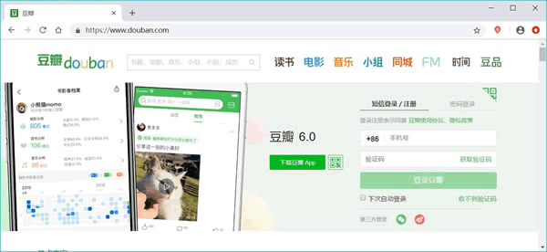

首页 > Python > Python编程基础
Python能干什么，Python的应用领域
Python 作为一种功能强大的编程语言，因其简单易学而受到很多开发者的青睐。那么，Python 的应用领域有哪些呢？
Python 有着非广泛的应用，几乎所有大中型互联网公司都在使用 Python，例如国外的 Google、Youtube、Dropbox，国内的百度、新浪、搜狐、腾讯、阿里、网易、淘宝、知乎、豆瓣、汽车之家、美团等等，Python 帮助它们完成了各种各样的任务。
概括起来，Python 的应用领域主要有如下几个。
图1：Python Web 开发框架
举个最直观的例子，全球最大的搜索引擎 Google，在其网络搜索系统中就广泛地使用了 Python 语言。另外，我们经常访问的集电影、读书、音乐于一体的豆瓣网（如图 2 所示），也是使用 Python 开发的。
不仅如此，全球最大的视频网站 Youtube 以及 Dropbox（一款网络文件同步工具）也都是用 Python 实现的。
Python 作为一种脚本语言，提供了诸多方便与服务器交互的软件包，比如 Python 标准库中包含了多个可用来调用操作系统功能的库。
例如，通过 pywin32 这个软件包，我们能访问 Windows 的 COM 服务以及其他 Windows API；使用 IronPython，我们能够直接调用 .Net Framework。
一般来说，Python 编写的系统管理脚本，无论是可读性，性能、还是代码重度和扩展性等方面，都要优于 shell 语言编写的脚本。
人工智能的核心是机器学习，机器学习的研究可分为传统机器学习和深度学习，它们两者被广泛的应用于图像识别、智能驾驶、智能推荐、自然语言处理等应用方向。
在众多编程语言中 Python 绝对是人工智能的首选语言，这是因为 Python 在机器学习和深度学习方面有着非常出众的优势。可以这么说，人工智能已经无法离开 Python 的支持，总结原因大致有以下几点：
从技术层面上将，Python 提供有很多服务于编写网络爬虫的工具，例如 urllib、Selenium 和 BeautifulSoup 等，还提供了一个网络爬虫框架 Scrapy。
并且，和其它解释型语言（如 Shell、JS、PHP）相比，Python 在数据分析、可视化方面有相当完善和优秀的库，例如 NumPy、SciPy、Matplotlib、pandas 等，这可以满足 Python 程序员编写科学计算程序的需求。
比如说，较为出名的游戏 Sid Meier's Civilization（文明，如图 3 所示）和 EVE（星战前夜）就是使用 Python 开发的。
图3：用 Python 做游戏开发
除此之外，Python 可以直接调用 Open GL 实现 3D 绘制，这是高性能游戏引擎的技术基础。事实上，有很多 Python 语言实现的游戏引擎，例如 Pygame、Pyglet 以及 Cocos 2d 等。
以上也仅是介绍了 Python 应用领域的“冰山一角”，其实，我们还可以用 PIL 和其他的一些工具进行图像处理；用 PyRo 工具包进行机器人控制编程等等。有兴趣的读者，可自行搜索资料进行详细了解。
Python 有着非广泛的应用，几乎所有大中型互联网公司都在使用 Python，例如国外的 Google、Youtube、Dropbox，国内的百度、新浪、搜狐、腾讯、阿里、网易、淘宝、知乎、豆瓣、汽车之家、美团等等，Python 帮助它们完成了各种各样的任务。
概括起来，Python 的应用领域主要有如下几个。
Web应用开发
在 Web 开发领域，Python 绝对是一颗冉冉升起的新星。尽管 PHP、JS 目前依然是 Web 开发的主流语言，但 Python 上升势头非常猛劲。尤其随着 Python 的 Web 开发框架逐渐成熟（比如 Django、Flask、Tornado、Web2py 等等），程序员可以更轻松地开发、管理复杂的 Web 程序。图1：Python Web 开发框架
举个最直观的例子，全球最大的搜索引擎 Google，在其网络搜索系统中就广泛地使用了 Python 语言。另外，我们经常访问的集电影、读书、音乐于一体的豆瓣网（如图 2 所示），也是使用 Python 开发的。

图2：用 Python 实现的豆瓣网
图2：用 Python 实现的豆瓣网
不仅如此，全球最大的视频网站 Youtube 以及 Dropbox（一款网络文件同步工具）也都是用 Python 实现的。
自动化运维
所谓自动化运维，实际上就是利用一些开源的自动化工具来管理服务器，比如业界流行的 Ansible（基于Python开发），它能帮助运维工程师解决重复性的工作。Python 作为一种脚本语言，提供了诸多方便与服务器交互的软件包，比如 Python 标准库中包含了多个可用来调用操作系统功能的库。
例如，通过 pywin32 这个软件包，我们能访问 Windows 的 COM 服务以及其他 Windows API；使用 IronPython，我们能够直接调用 .Net Framework。
一般来说，Python 编写的系统管理脚本，无论是可读性，性能、还是代码重度和扩展性等方面，都要优于 shell 语言编写的脚本。
人工智能领域
人工智能是当前非常火的一个研究方向，如果要评选当前最热门、工资最高的 IT 职位，那么一定非人工智领域的工程师莫属。人工智能的核心是机器学习，机器学习的研究可分为传统机器学习和深度学习，它们两者被广泛的应用于图像识别、智能驾驶、智能推荐、自然语言处理等应用方向。
在众多编程语言中 Python 绝对是人工智能的首选语言，这是因为 Python 在机器学习和深度学习方面有着非常出众的优势。可以这么说，人工智能已经无法离开 Python 的支持，总结原因大致有以下几点：
- 目前世界上优秀的人工智能学习框架，比如 Google 的 TransorFlow（神经网络框架）、FaceBook 的 PyTorch（神经网络框架）以及开源社区的 Karas 神经网络库等，都是用 Python 实现的；
- 微软的 CNTK（认知工具包）也完全支持 Python，并且该公司开发的 VS Code，也已经把 Python 作为第一级语言进行支持；
- Python 擅长进行科学计算和数据分析，支持各种数学运算，可以绘制出更高质量的 2D 和 3D 图像。
VS Code 是微软推出的一款代码编辑工具（IDE），有关它的下载、安装和使用，后续章节会做详细介绍。
总之，AI 时代的来临，使得 Python 脱颖而出，Python 作为 AI 时代头牌语言的位置，基本无人可撼动！网路爬虫
Python 语言很早就用来编写网络爬虫。Google 等搜索引擎公司大量地使用 Python 语言编写网络爬虫。从技术层面上将，Python 提供有很多服务于编写网络爬虫的工具，例如 urllib、Selenium 和 BeautifulSoup 等，还提供了一个网络爬虫框架 Scrapy。
科学计算
自 1997 年，NASA 就大量使用 Python 进行各种复杂的科学运算。并且，和其它解释型语言（如 Shell、JS、PHP）相比，Python 在数据分析、可视化方面有相当完善和优秀的库，例如 NumPy、SciPy、Matplotlib、pandas 等，这可以满足 Python 程序员编写科学计算程序的需求。
游戏开发
很多游戏使用 C++ 编写图形显示等高性能模块，而使用 Python 或 Lua 编写游戏的逻辑。与 Python 相比，Lua 的功能更简单，体积更小；而 Python 则支持更多的特性和数据类型。比如说，较为出名的游戏 Sid Meier's Civilization（文明，如图 3 所示）和 EVE（星战前夜）就是使用 Python 开发的。
图3：用 Python 做游戏开发
除此之外，Python 可以直接调用 Open GL 实现 3D 绘制，这是高性能游戏引擎的技术基础。事实上，有很多 Python 语言实现的游戏引擎，例如 Pygame、Pyglet 以及 Cocos 2d 等。
以上也仅是介绍了 Python 应用领域的“冰山一角”，其实，我们还可以用 PIL 和其他的一些工具进行图像处理；用 PyRo 工具包进行机器人控制编程等等。有兴趣的读者，可自行搜索资料进行详细了解。
关注公众号「站长严长生」，在手机上阅读所有教程，随时随地都能学习。内含一款搜索神器，免费下载全网书籍和视频。

微信扫码关注公众号